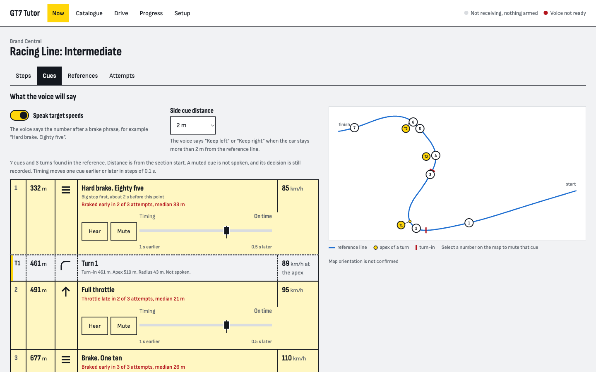
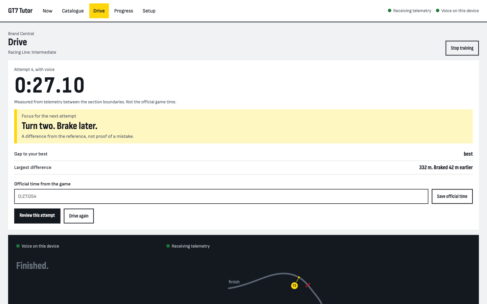
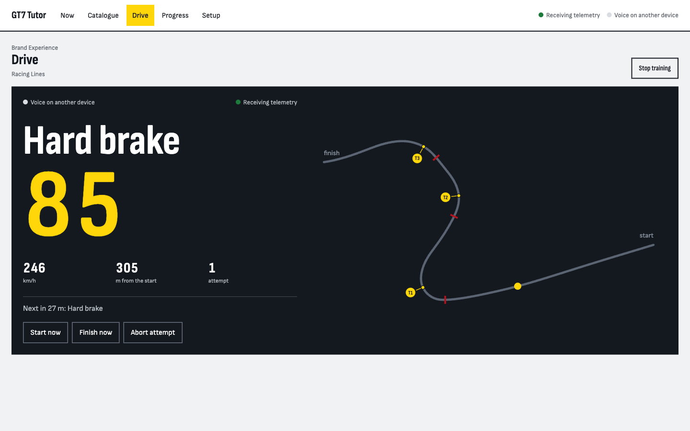
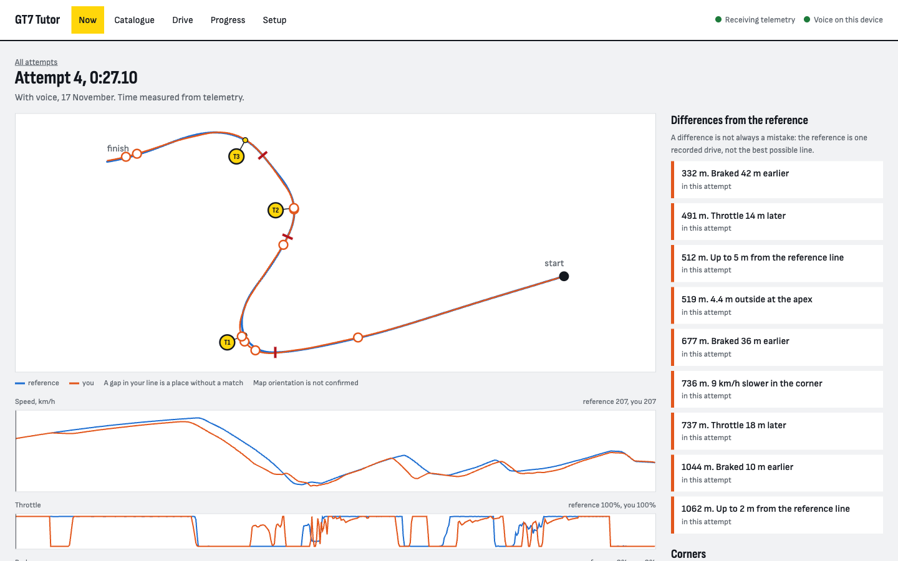
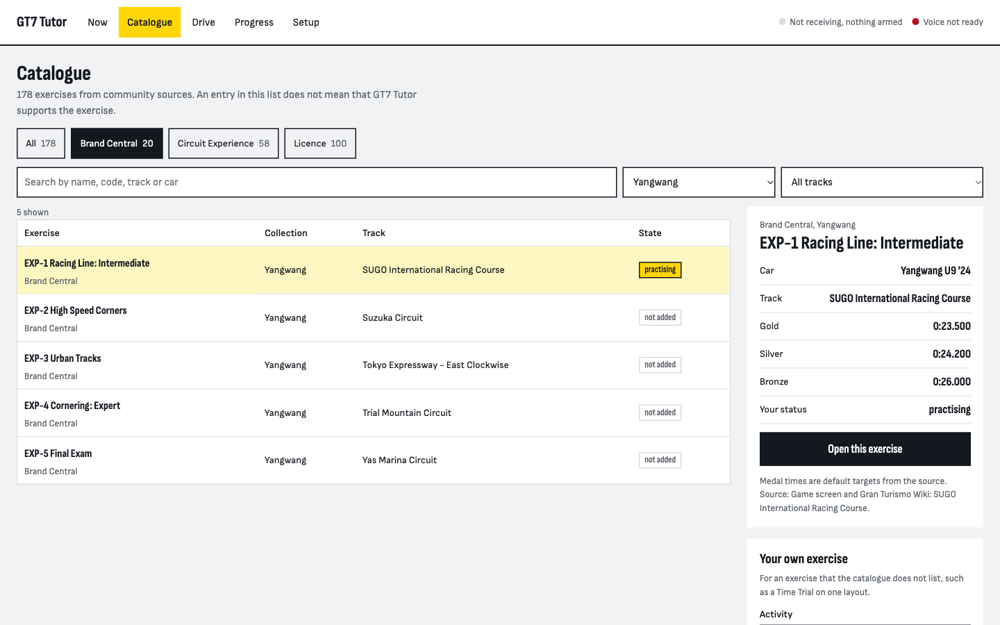

How it works
For each exercise the application leads you through four steps. It always shows the current step and the next action.
-
1Record the reference
Open the exercise in the game and record its demonstration three times. The demonstration is the same on every run and the background is not, so GT7 Tutor finds the part that repeats. That recorded drive becomes the target for the cues.

-
2Drive without voice
Drive two or three baseline attempts. GT7 Tutor finds the start and the finish by itself, measures the time from the telemetry and finds the differences from the reference.

-
3Drive with voice
Arm a guided attempt and drive. The voice names the action: “Hard brake. Eighty five”, “Full throttle”, or “Tighter” when you run wide before an apex. The first word comes about half a second before the point, after the delay of your device. After the finish the voice says one focus for the next attempt, such as “Turn one. Brake later.”

-
4Review
Compare each attempt with the reference on a map and in linked speed and pedal charts. Differences that repeat across attempts show as counts, for example “Braked early at 332 m in 4 of 6 attempts”. A difference is not always a mistake: the reference is one recorded drive.

What you need
- A PS5 with Gran Turismo 7.
- A computer with macOS, Windows or Linux on the same home network as the console.
- Docker for the database, and Node.js 26 or later with pnpm. On macOS and Linux, a setup script checks these and prepares the rest.
- A current browser on that computer or on a phone. On a phone, turn off auto-lock during a session.
Exercises
You record a reference from a demonstration of the game. GT7 Tutor then guides you through that exercise.
The catalogue lists 100 licence tests and 58 Circuit Experience sections from public sources. A listed exercise is not a supported exercise.
Find an exercise
Select an exercise in the catalogue, or create your own.

Support the project
GT7 Tutor is free and stays free. If it helps you, you can buy the author a coffee. A donation is voluntary and unlocks nothing.
Buy me a coffee